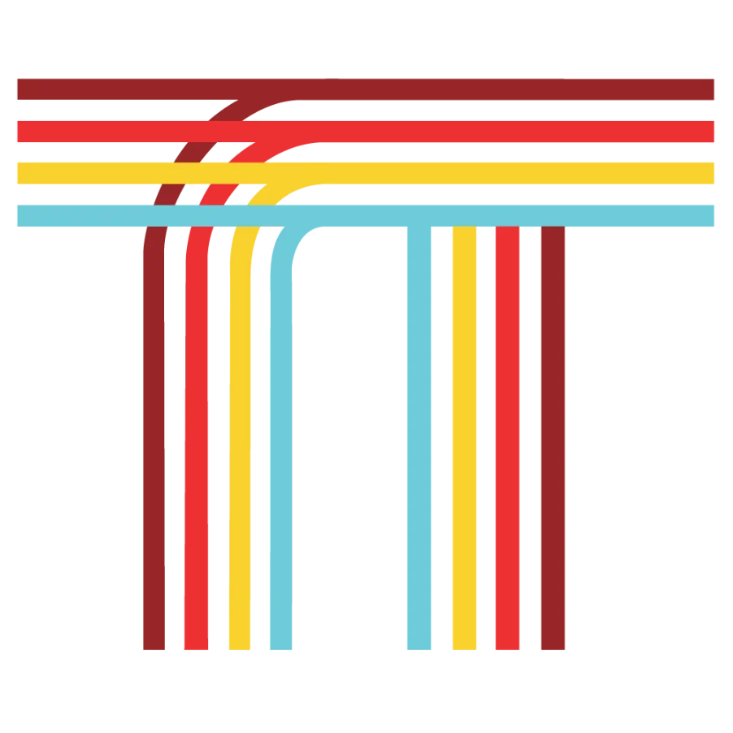
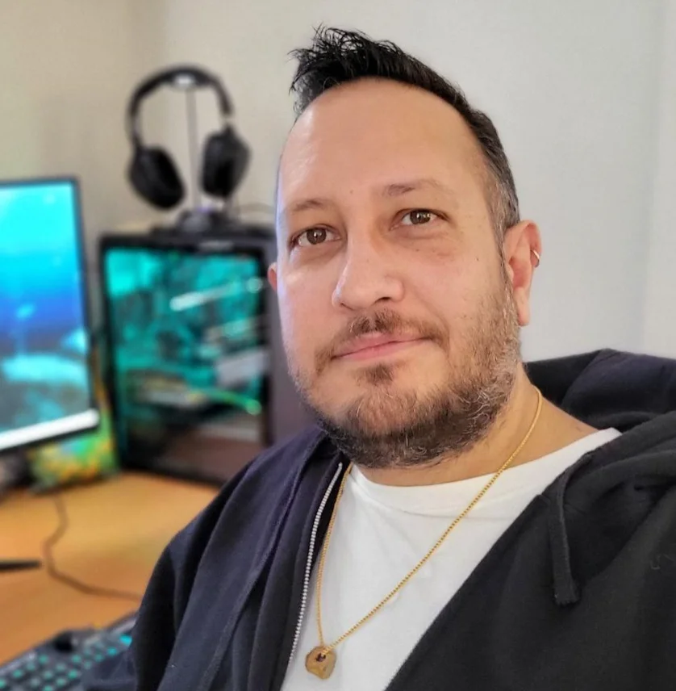

01 / 04
Contract Games Programming
Senior Unity / C# / C++ engineering — gameplay systems, console certification, optimization, live-service feature work and ports. Drop-in at any stage from prototype to ship.
Torallion Technologies is the independent practice of Damian Rajamanie, MSc — 17 years of credited work on shipped titles, senior-level Unity and C++ programming, live-service operations and project leadership available to studios and start-ups across Canada.

Engagements flex to fit — a few hours of focused consultancy, a short multi-day spike, a multi-month feature sprint, or a long-term embedded contract. Fixed-price milestones where it makes sense.
Senior Unity / C# / C++ engineering — gameplay systems, console certification, optimization, live-service feature work and ports. Drop-in at any stage from prototype to ship.
Pitch breakdown, time and cost estimation, technical roadmaps, sprint planning, code reviews, hiring panels and mentoring. Senior-level oversight at contract rates.
Secure IAP/MTX systems, BaaS architecture on PlayFab and AWS, CI/CD pipelines with Jenkins and GitHub Actions, live operations and certification cadence on 5+ portals.
Industry-level instruction in graphics programming, shaders, OpenGL, C# and game project management — currently active sessional at UPEI. One-on-one or small group.

Torallion Technologies is a one-person games engineering practice based in Charlottetown, PEI. The work is contract programming and project leadership for studios and start-ups across Canada — a senior engineer dropped into your team for as long as the engagement needs.
That one person is Damian Rajamanie, MSc — 17 years in games, credited on titles shipped by Other Ocean Interactive, Electronic Arts and IceJam. Torallion is how that experience is now offered direct, without an agency in the middle.
Damian — he goes by Raj — is highly sociable and well connected, with an extensive network of talented individuals, ranging from:
These folks have worked at Electronic Arts, Ubisoft and beyond. When a project needs more than one pair of hands, Raj can assemble an elite team of professionals.
Raj's personal credits and demo-reel — separate from Torallion's own work.
Available now for contract programming, technical leadership, prototype work and short consulting engagements. PEI-based, fully remote across Canadian time zones.